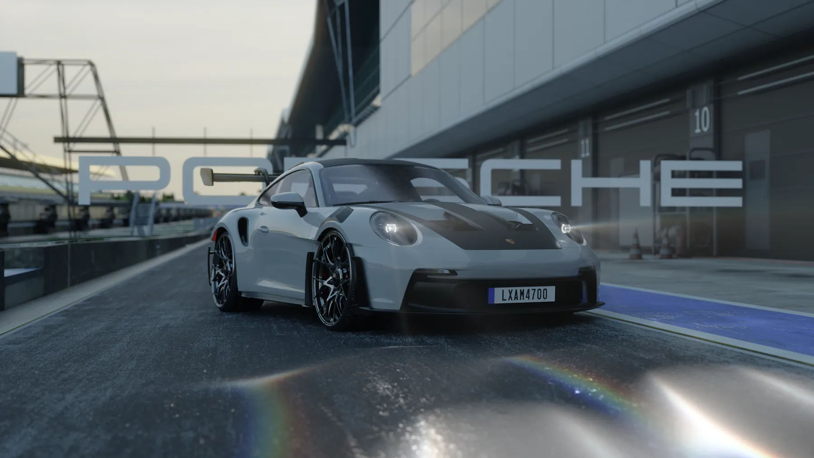
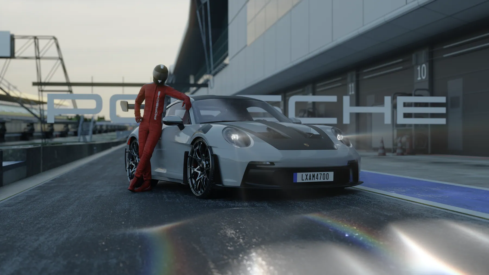
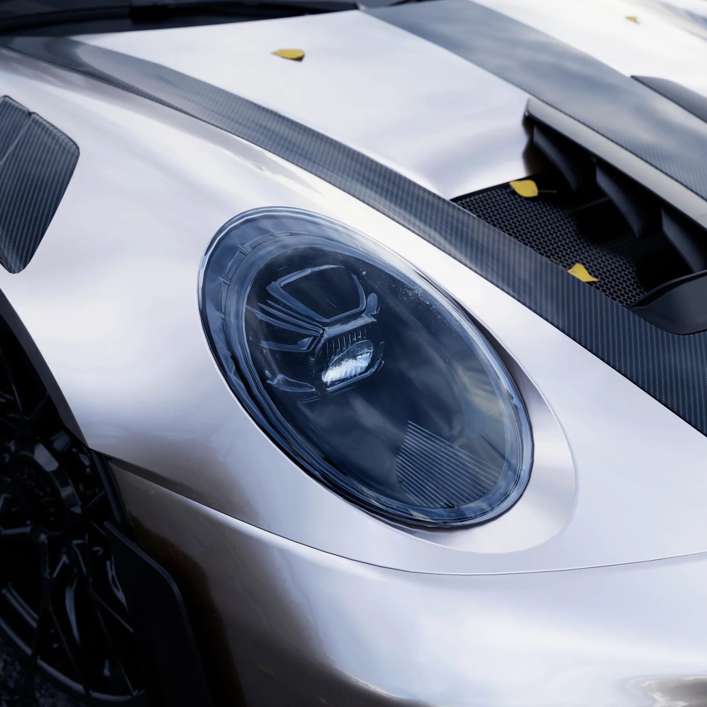
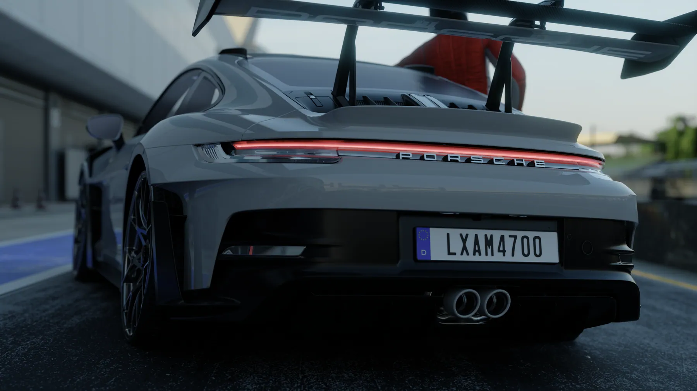
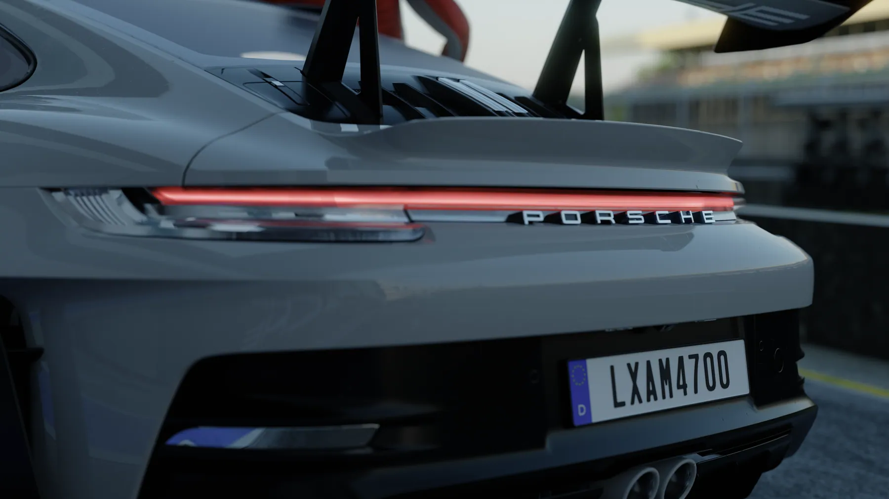
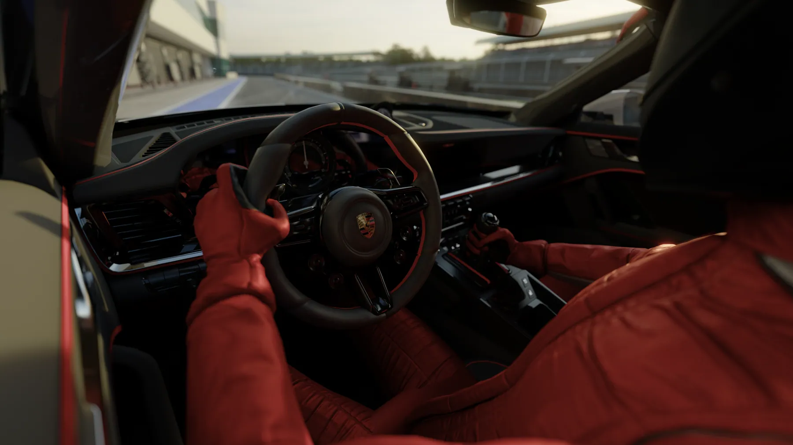
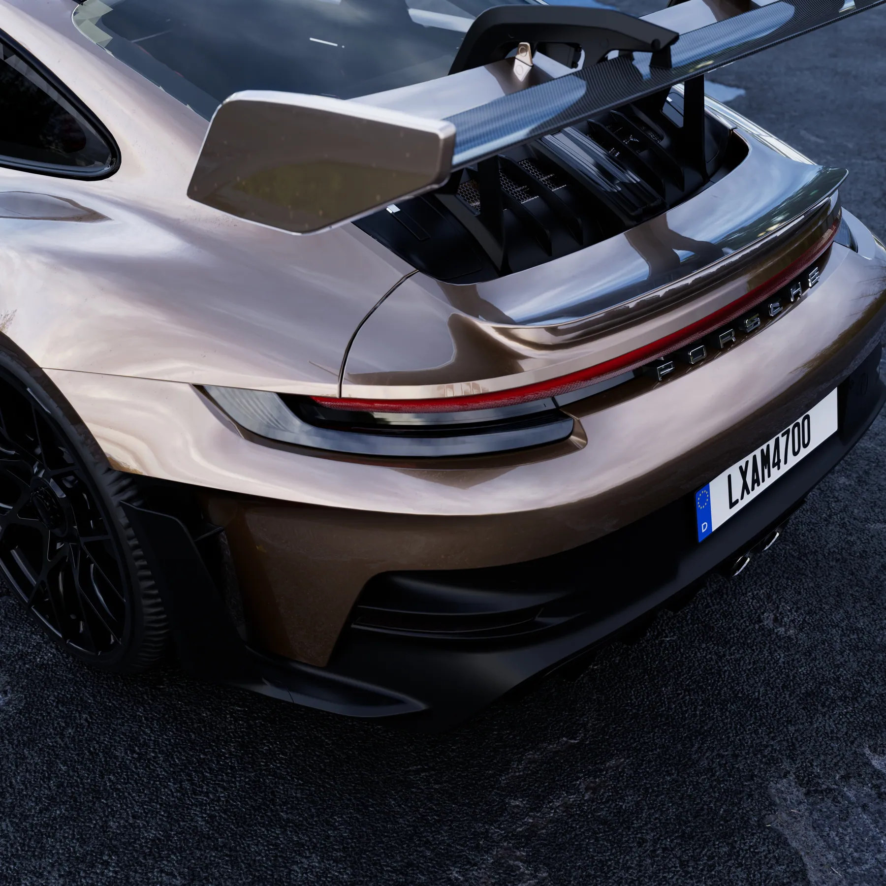
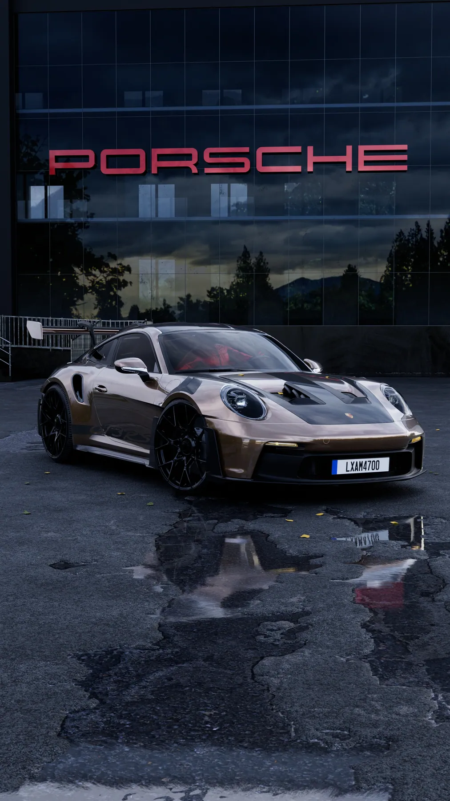
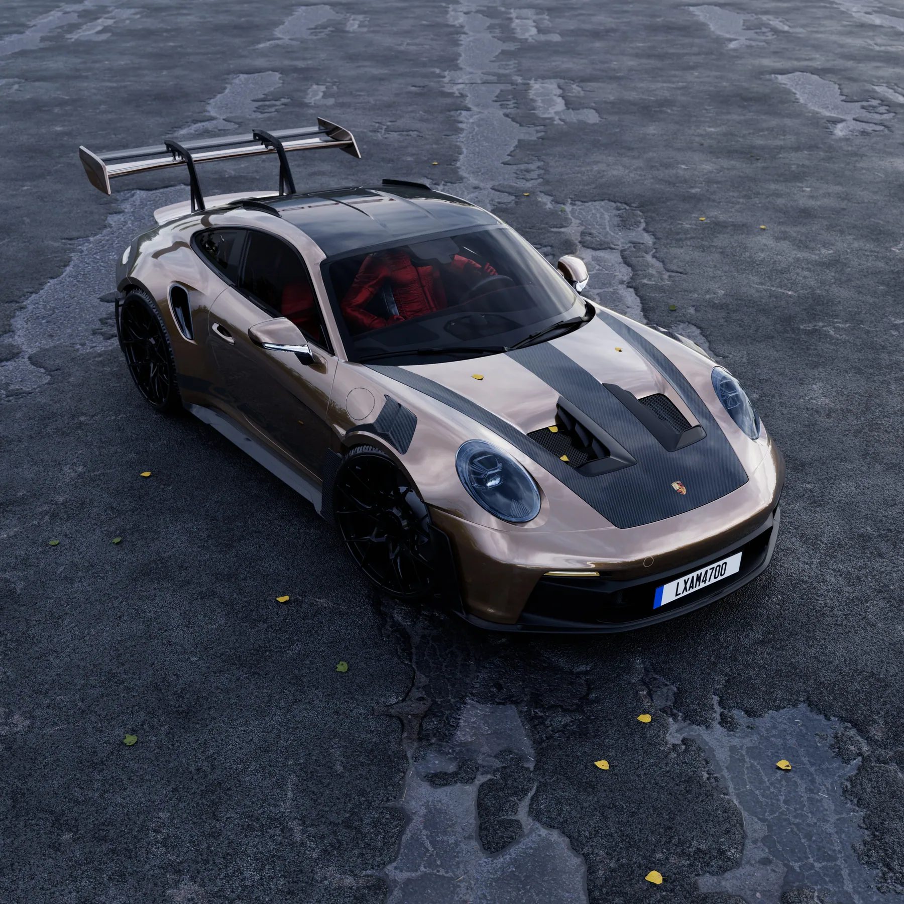

Dự án · Dự án của studio · 2024
Porsche 911: bộ hình pit lane
Một chiếc 911 đứng trong pit lane lúc chiều muộn, chữ PORSCHE chạy dọc bức tường phía sau. Bộ hình đi từ toàn cảnh tới cận cảnh đèn, cánh gió, rồi vào hẳn trong xe. Tất cả dựng và render bằng Blender.
Bài toán
Ba thứ khó nhất
Sơn bạc không có gì để bám
Màu bạc gần như không có màu của riêng nó, nó chỉ phản chiếu thứ xung quanh. Bức tường pit, mái che, mặt đường ướt đều phải dựng đúng vị trí, vì chúng chính là thứ vẽ nên thân xe.
Giờ chiều muộn khó giữ
Ánh sáng xiên đẹp nhưng dải sáng tối rất rộng. Giữ được chi tiết trong bóng gầm mà không làm cháy mảng trời phía sau là phần mất thời gian nhất của bộ này.
Nội thất phải khớp ngoại thất
Vào trong xe là đổi hoàn toàn hệ ánh sáng. Nếu tông màu trong cabin lệch khỏi tông ngoài thì hai shot cạnh nhau sẽ trông như hai chiếc xe khác nhau.
Hình ảnh
Từng cảnh, và lý do








Cách làm
Bốn bước
Dựng bối cảnh trước khi chỉnh sơn
Pit lane, mái che, mặt đường dựng xong mới động tới vật liệu thân xe. Với màu bạc, chỉnh sơn trước khi có bối cảnh là chỉnh mò.
Chốt một giờ trong ngày
Chọn đúng một hướng nắng rồi giữ nguyên cho cả bộ. Mỗi shot đổi giờ một chút là cả bộ hình mất tính liên tục.
Tách bản cận và bản toàn
Bản dựng chi tiết chỉ dùng cho các shot macro. Bản nhẹ hơn dùng cho toàn cảnh, nơi không ai nhìn thấy đường chỉ trên đèn.
Dựng khung dọc riêng
Bản dọc đặt lại camera và dựng lại bố cục từ đầu. Nhanh hơn nhiều so với việc cố cứu một bản ngang bị cắt hai bên.
Khi ai đó bảo bạn không làm được, họ đang nói về giới hạn của họ, không phải của bạn.
Muốn làm được shot như thế này?
Đây là đúng những kỹ năng trong lộ trình LXAM Academy, dựng hình, ánh sáng, render tách lớp, dựng phim. Học bằng dự án thật, có người sửa bài.